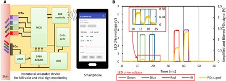

Funcionales: ¿Qué es lo que el diseño debe hacer?
- Medir la bilirrubina en el menor tiempo posible
- No ser invasivo
- Conocer propiedades espectrales de la piel
- Debe ser eficaz, exacto y preciso para la medición de bilirrubina
- Ayudar a detectar aumentos de bilirrubina y medir el riesgo de complicaciones
No funcionales: ¿Cuáles son las propiedades del diseño?
- Ser ergonómico.
- Ser portátil y de facil transporte
- Precio asequible
- Interfaz intuitiva
- Dar independencia parcial
- Adaptable y con disposicion a actualizarse
Contexto cientifico
Figura 1: Esquema conceptual del bilirrubinómetro portátil.(1)

Figura 2: Estructura del bilirrubinómetro portátil real(1)
Figura 3: Diagrama de sistema del dispositivo.(1)
Dispositivo portátil neonatal para la detección de ictericia en tiempo real basada en colorimetría con detección simultánea de signos vitales
En este estudio, se desarrolló un bilirrubinómetro portátil, liviano y de bajo costo que puede medir de manera no invasiva los niveles de bilirrubina en la frente de los recién nacidos y también evaluó su funcionalidad en los recién nacidos. Además, se agregó la capacidad de medir la frecuencia cardíaca y la saturación de oxígeno. Para obtener señales LED para mejorar la precisión de la medición de bilirrubina y realizar una detección adicional de signos vitales, se desarrollaron una lente de polidimetilsiloxano y una interfaz de silicona compuesta por una mezcla de polidimetilsiloxano ennegrecido y Ecoflex. La lente permitió obtener señales de alta intensidad, mientras que la interfaz de silicona ayudó a mejorar la adhesión entre el dispositivo y la piel. El circuito de procesamiento permite la adquisición de señales aún más pequeñas de luz reflejada. Los niveles de bilirrubina se miden por la diferencia de las absorbancias de las luces azul (λ = 460 nm) y verde (λ = 570 nm) generadas con pequeños LED. Además, el sistema de procesamiento y la pantalla se configuraron en un teléfono inteligente o una computadora personal. Relación entre el dispositivo portátil y el bilirrubinómetro transcutáneo convencional en 50 neonatos. El coeficiente de correlación de los datos obtenidos por los medidores fue de 0,81. Este estudio se llevó a cabo de acuerdo con la Declaración de Helsinki y las Directrices éticas japonesas del Ministerio de Salud, Trabajo y Bienestar de Japón. Las mediciones se realizaron en recién nacidos con una edad gestacional de al menos 36 semanas.(1)
Contexto comercial
App BiliScan
La aplicación Biliscan para medición de la bilirrubina transcutánea Se evaluaron neonatos con ictericia, en los que se determinó niveles de bilirrubina sérica toatal y bilirrubina transcutánea mediante la app Biliscan para ios se estudiaron 59 casos, donde el promedio de bilirrubina serica era de 14.5 mg/dl y el promedio obtenido mediante Biliscan era de 12.2 mg/dl. La sensibilidad de la app fue de 63.3%, especificidad del 93%. La app es util para medir la Bilirrubina total en neonatos con ictericia que no requieren fototerapia, Biliscan tiene una sensibilidad moderada en casos de neonatos que necesitan fototerapia
Bilirrubinómetro Dräger JM-105
El Bilirrubinómetro Drager es proveniente de Alemania. Mide la cantidad de de bilirrubina en neonatos desde las 24 semanas de edad gestacional hasta la edad de 14 días (es el tiempo recomendado de uso), Otros factores que afectan resultados exactos son: Tener sangre de grupo incompatible, muy bajo peso, pertenecer a grupos étnicos en específico (asiáticos, africanos/americanos mujeres, italianos. medio orientales). Sin embargo un estudio demuestra que la medición de bilirrubina en pacientes que estén llevando tratamiento con fototerapia La medición de Bilirrubina transcutánea con el dispositivo JM-105 es útil para monitorear la respuesta a la fototerapia en recién nacidos a término y prematuros.
Bilirrubinómetro Transcutáneo MBJ20
El MBJ20 mide la cantidad de bilirrubina de los recién nacidos mayores de 35 semanas de edad gestacional. Cumple con las últimas guías médicas (NICE 2010). Cuenta con auto-calibración sencilla para una precisión mayor y eficaz, con uso sencillo y función de almacenamiento y memoria de resultados. Da a conocer los resultados instantáneamente.Es un método eficaz para detectar ictericia fisiológica, una forma rápida y no invasiva de medir el nivel de bilirrubina, reduciendo la estancia prolongada del bebé en el hospital. También se observó que basado en el nivel de blirrubina transcutanea, se puede decidir si el neonato requiere fototerapia
BiliChek - Sistema de medición no invasiva de la bilirrubina
Bilichek es un bilirrubinómetro estadounidense que mide la bilirrubina emitiendo luz blanca en la piel de un recién nacido y midiendo la intensidad de las longitudes de onda específicas que se reflejan. En pruebas realizadas con BiliCheck, se demostró que en neonatos de distintas etnias, el resultado no se muestra muy cambiante. El test se realiza al entrar en contacto con la piel del bebé con la punta removible para no causar infecciones; los resultados están listos en segundos. Es un método sencillo, rápido y fiable para evaluar la gravedad de la hiperbilirrubinemia en recién nacidos de a término y prematuros lo que puede reducir la necesidad de tomar muestras de sangre. Sin embargo se recomienda que las mediciones confirmatorias de bilirrubina sérica cuando el nivel sobrepasa 11.7 mg/dl)
Bilitest
Es un equipo portátil de tipo reflector bicromático. Mide qué tan amarilla se encuentra la piel del recién nacido. La medición se realiza en la señal de fondo de la hemoglobina. Usa baterías AA. El tiempo de medición de la cantidad de la bilirrubina no demora más de 1-2 segundos. Los datos cuentan con alta precisión en recién nacidos mayores a las 35 semanas de edad gestante.
BiliCare
Es un dispositivo estadounidense que mide la cantidad de bilirrubina con tecnología LED. Está basada en la medición espectroscópica usando luz a longitudes de onda variables. El sistema BiliCare mide el nivel de bilirrubina transcutánea en el recién nacido mediante la transmisión de luz a diferentes longitudes de onda a través del oído externo. Requiere de una sola medición por test. BiliCare muestra una alta correlación del 90% con respecto al método invasivo de la medición de bilirrubina mediante extracción de sangre. La medición de bilirrubina transcutánea utilizando el BiliCare TM ® en neonatos de término y casi término sin factores de riesgo se correlacionó en forma moderada con los valores de bilirrubina sérica total
Blbiografia
1.
2.
3.
4.
5.
6.
7.
8.
9.
10.
11.
12.
13.
14.
15.
16.
17.
18.
19.
20.
21.
22.
23.
24.
25.
26.
27.
28.
29.
30.
31.
32.